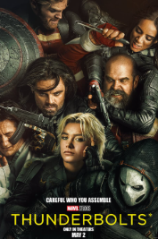
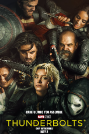

MCU have a lot of plans for the future which being the biggest are Avengers: Doomsday, and Avengers: Secret Wars with the Directors Joe Russo, and Anthony Russo coming back and Robert Downey Jr. coming back to play Doctor Doom but thats for 2026-2027, but in this year the movie I'm most excited for is Thunderbolts because from what heard there will be no big three being Wizards, Aliens, or Android this is probably the closest thing we will get to them being humans but I just want to see more BUCKY!
 

Here is the link to my favorite Marvel heroes and another link for what happen to the MCU.
Here a slider just for fun